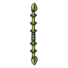

ตั๊กแตนตำข้าวหางม้า
มอนธาตุดิน Lv 74–92
เจอที่
| แมพ | โซน | Lv | ภูมิภาค |
|---|---|---|---|
| หุบเฟิร์นยักษ์ | 74–92 | ที่ราบสูง | |
| หุบเฟิร์นยักษ์ | เฟิร์นยักษ์กลางหุบ | 86–92 | ที่ราบสูง |
ค่าสถานะตามเลเวล
| Lv | HP | ATK | DEF | MDEF | EXP | Job |
|---|---|---|---|---|---|---|
| 74 | 45,899 | 157–235 | 30 | 13 | 91 | 68 |
| 83 | 64,577 | 181–272 | 33 | 15 | 102 | 77 |
| 92 | 87,208 | 208–313 | 37 | 17 | 112 | 84 |
ตีด้วยธาตุไหนดี
แรงขึ้น: ไฟ ×1.5 พิษ ×1.25
เบาลง: ลม ×0.5 ดิน ×0.25
วัตถุดิบที่ดรอป
| ของ | โอกาส | |
|---|---|---|
| ใบมีดตั๊กแตน | 55% | 1 ชิ้น (15% ได้ 2) |
อุปกรณ์ที่ดรอป (1)
| ของ | โอกาส |
|---|---|
 ไม้พลองตั๊กแตนหางม้า | 0.12% |
สกิล
ทุบพื้น (Lv 25+) · ทุบพื้น (Lv 60+) · ดึง (Lv 60+)